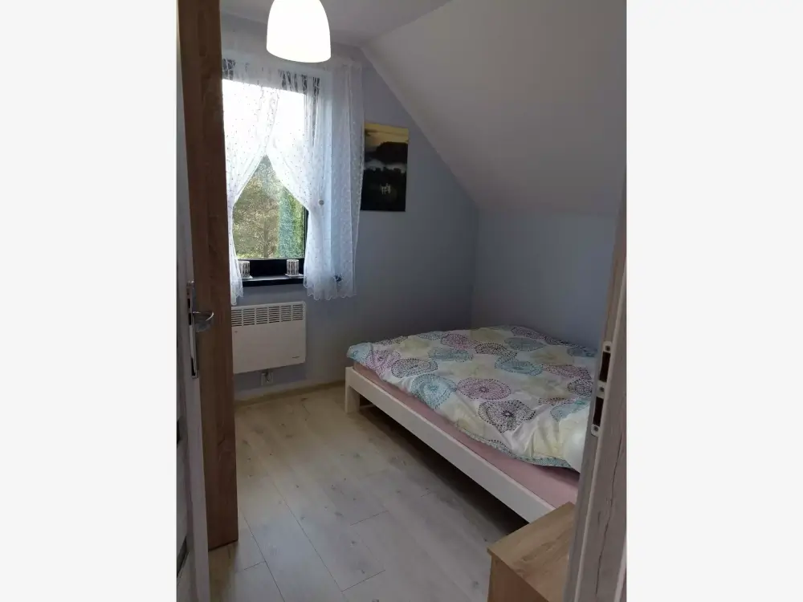
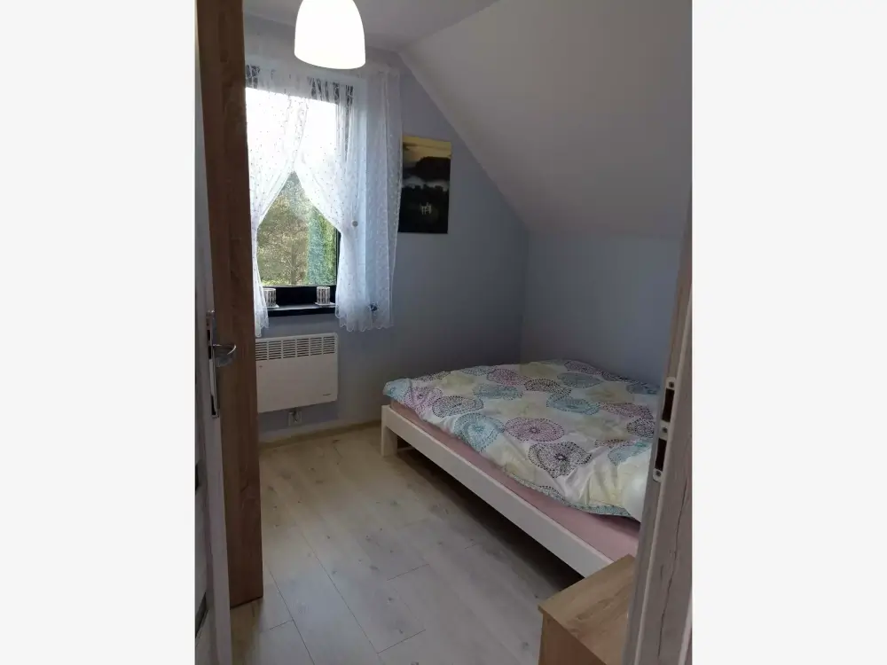
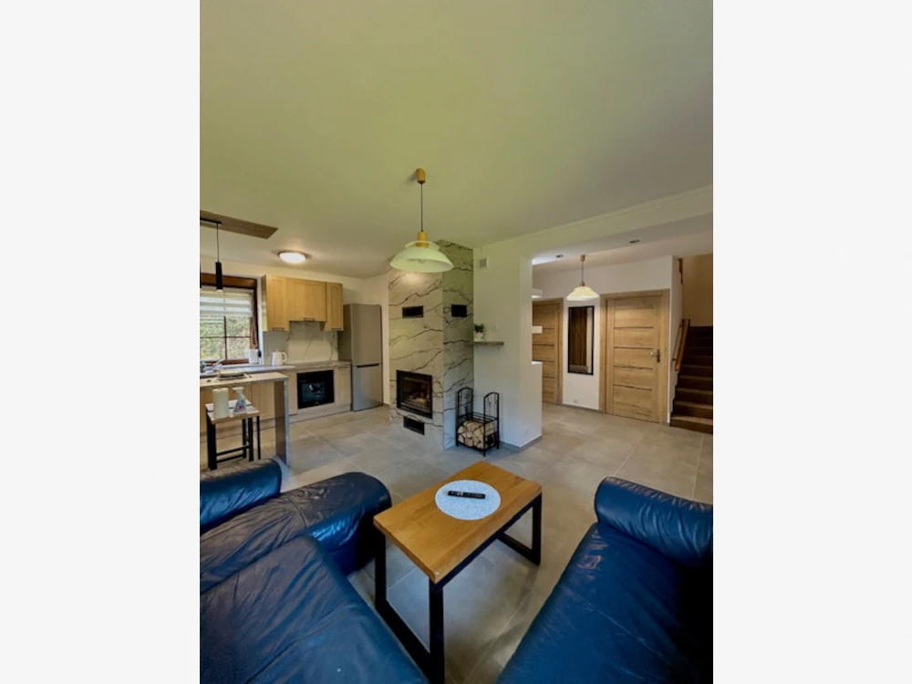
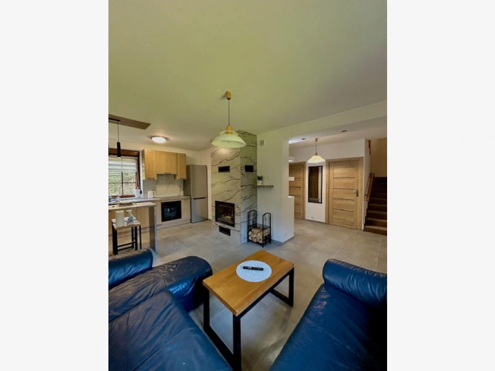
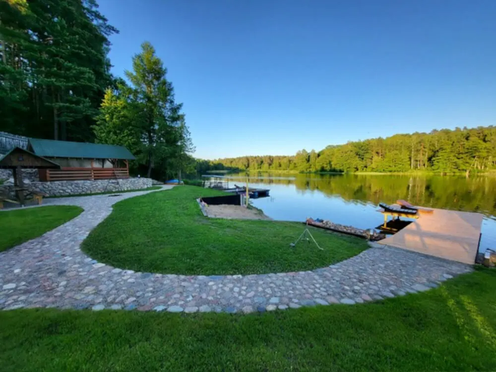
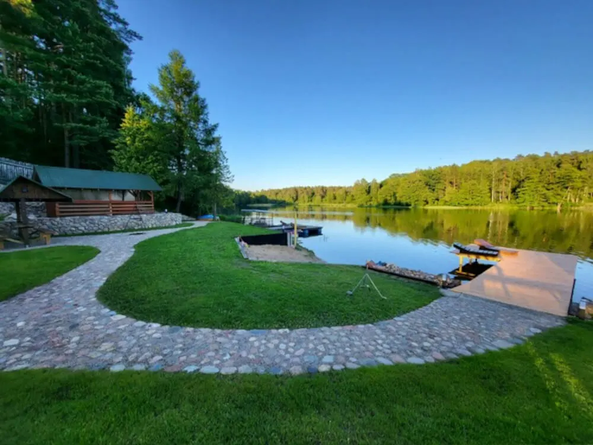

Lokalizacja
Apartamenty są zlokalizowane nad samym jeziorem Studzienicznym w Przewięzi w północno-wschodniej części Augustowa. Obiekt w bezpośrednim sąsiedztwie lasu i jeziora, w bardzo malowniczym, cichym i spokojnym miejscu. Do najbliższego sklepu i restauracji jest 900m, a do centrum miasta ok. 9km. Dookoła lasy, jeziora, krystalicznie czyste powietrze, strefa ochronna Kanału Augustowskiego, obszar Natura2000, strefa ciszy i centrum Puszczy Augustowskiej.


 



 



 
